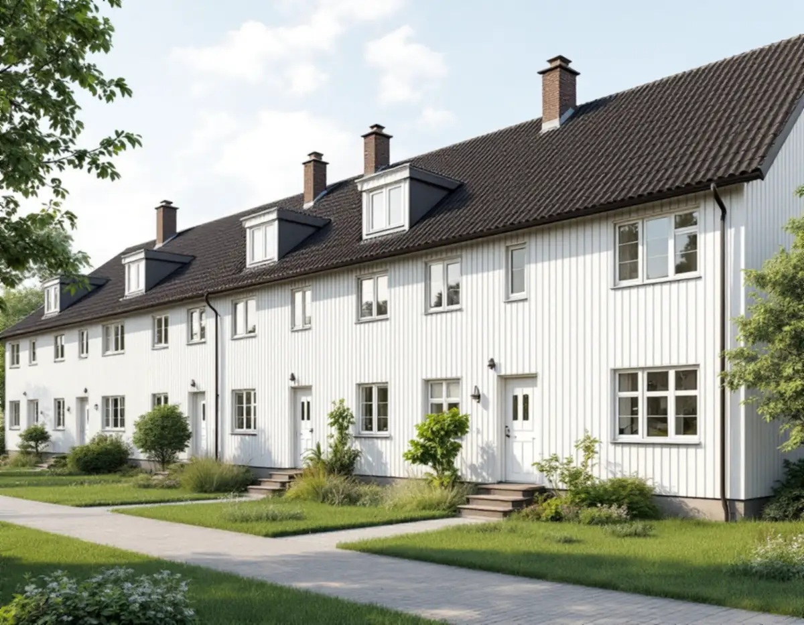
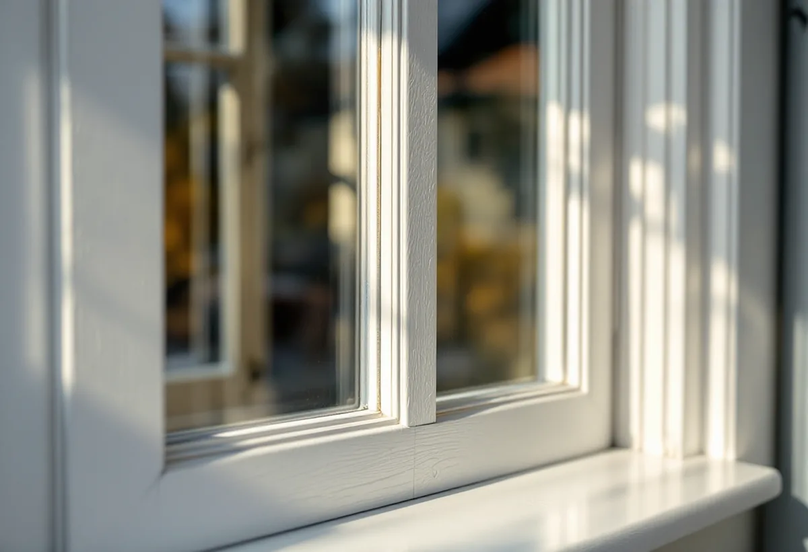
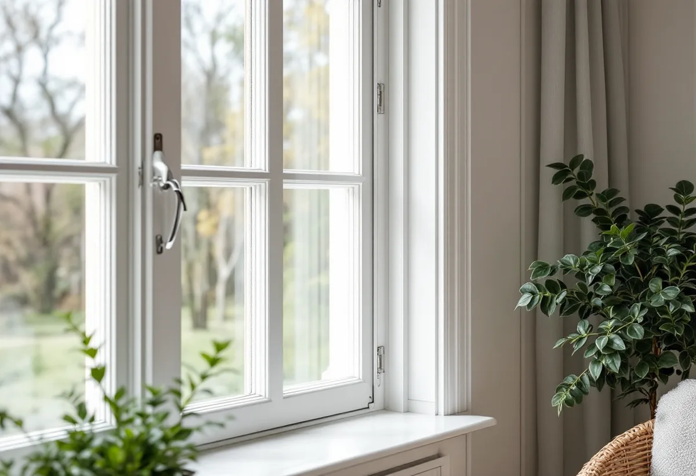

Besiktning
Varje fönster bedöms: färgtyp, kitt, trä och beslag.
Radhusen vid Astrakangatan och Friherregatan i Hässelby gård ansågs mycket moderna när de byggdes 1957. I dag är tunnelbanestaden utpekad som kulturhistoriskt värdefull miljö, och fönstren är en del av helheten. Geal Entreprenad AB renoverar fönster på radhus och villor i Hässelby och behåller fönstrens utseende.

Enligt Stadsmuseets skrift om Hässelby gård i serien Stockholms spår pågick byggandet i stadsdelen som mest 1954 och 1955. Radhusen vid Astrakangatan och Friherregatan uppfördes av Småstugebyrån 1957 och ansågs mycket moderna, med fasader av sidiplattor och tak av nästan svarta invaritplattor, det vill säga korrugerad eternit.
Bostadshusen grupperades med omväxlande höga punkthus och låga hus kring skyddade gårdar. Tunnelbanestationen invigdes 1956.

I tabellen i stadens strategi Varsam är både Hässelby gård och Hässelby strand markerade som kulturhistoriskt värdefulla miljöer av typen tunnelbanestad. Hässelby villastad finns med i samma tabell som villastad, men utan den markeringen.
Stockholms stad räknar upp vilka fönsterändringar som kan kräva bygglov, bland annat att byta material eller kulör, ändra dimensioner, proportioner eller profilering på karmar, bågar och spröjs, byta upphängning och ändra indelning. En renovering som behåller allt det är det säkraste sättet att förnya fönstren i en värdefull miljö.
Stadens områdesfakta för 2025 visar 324 småhus med äganderätt i Hässelby gård och 13 i bostadsrätt. I Hässelby villastad är småhusen många fler: 4 757 med äganderätt och 204 i bostadsrätt.
Äger du radhuset bestämmer du själv över fönstren, men eftersom husen i en grupp byggdes likadana är det klokt att behålla samma kulör och utförande som grannarna. Om fönsterbyten i stadsdelen kan du läsa under fönsterbyte i Hässelby.
Riksantikvarieämbetet skriver att det ännu på 1950-talet var linoljefärg som föreskrevs för utvändig snickerimålning, och att grundning och två strykningar var det minsta som skulle utföras enligt en handbok i måleri från 1953. Fönster från den tiden är alltså ofta målade med linoljefärg från början.
Vid en renovering tar vi reda på vilken färg som sitter på bågarna i dag. Myndigheten varnar för att måla över äldre färgtyper med moderna material, eftersom nästa underhåll då ofta blir mer komplicerat.
Riksantikvarieämbetet skriver att komplettering med tätningslist och delvis nya beslag är de åtgärder som oftast utförs, och att ett gammalt fönster med rätt tätningslist och tillsatsruta kan bli lika energisnålt som ett nytt. Tillsatsrutan fästs på innerbågen, och vill man behålla fönstrets profiler är en extra träbåge på insidan ofta den bästa lösningen.
Vi väljer lösning efter hur fönstret ser ut och vad som ska behållas. Springans bredd kan enligt myndigheten mätas genom att fästa små klumpar modellera där listen ska sitta, och samma knep används när gångjärnen justeras. Om måleri i Hässelby i övrigt kan du läsa under målare i Hässelby.

Varje fönster bedöms: färgtyp, kitt, trä och beslag.
Stadsmuseets karta kontrolleras om något ska ändras.
Fönster för fönster, med tätning för sig.
Skrapning, lagning, kittning och målning i samma färgtyp.
Tätningslist eller tillsatsruta efter vad fönstret tål.
Vi går igenom fönstren och hur de sköts framåt.
Reparation och målning av fönster på ett småhus som du äger och bor i räknas som rotarbete hos Skatteverket. Avdraget gäller arbetskostnaden.
Avdraget är högst 30 procent av arbetskostnaden, högst 50 000 kronor per person och år och högst 75 000 kronor tillsammans med rutavdrag. Material och resor ger inget avdrag. Geal drar avdraget direkt på fakturan.
Antal fönster och bågar, färgtyp och hur mycket som ska skrapas, lagningar, beslag och val av tätning. Efter ett gratis platsbesök får du ett skriftligt kostnadsförslag.
Byta eller renovera fönster.
Fönsterbyte i Stockholm →Takbyte, takbesiktning och plåtarbeten.
Takläggare i Hässelby →Villastaden, Hässelby strand och gård.
Takrenovering i Hässelby →Styckade tomter, gränser och kartan.
Attefallshus i Hässelby →Källarbadrum, backventil och bostadsrätt.
Badrumsrenovering i Hässelby →Riva, bygga nytt och delad tomt.
Byggföretag i Hässelby →Villastaden och radhusen.
Fasadmålning i Hässelby →Villastad, sommarstugor och grupphus.
Fasadrenovering i Hässelby →Villor, radhus och grupphus.
Fönsterbyte i Hässelby →Slipa trägolvet – eller lägga nytt.
Golvläggare i Hässelby →Golvet under mattan.
Golvslipning i Hässelby →Villastad, grupphus och radhus i Hässelby.
Målare i Hässelby →Plåttak efter eternit, rännor och beslag i Hässelby.
Plåtslagare i Hässelby →Altan, bod och plank i villastaden och radhusen.
Snickare i Hässelby →Eternit och asbest på taket.
Takbyte i Hässelby →Ny tapet i grupphus och villor.
Tapetsering i Hässelby →Hus som vuxit i omgångar.
Tillbyggnad i Hässelby →Grupphusen, eterniten och ventilationen.
Totalrenovering i Hässelby →